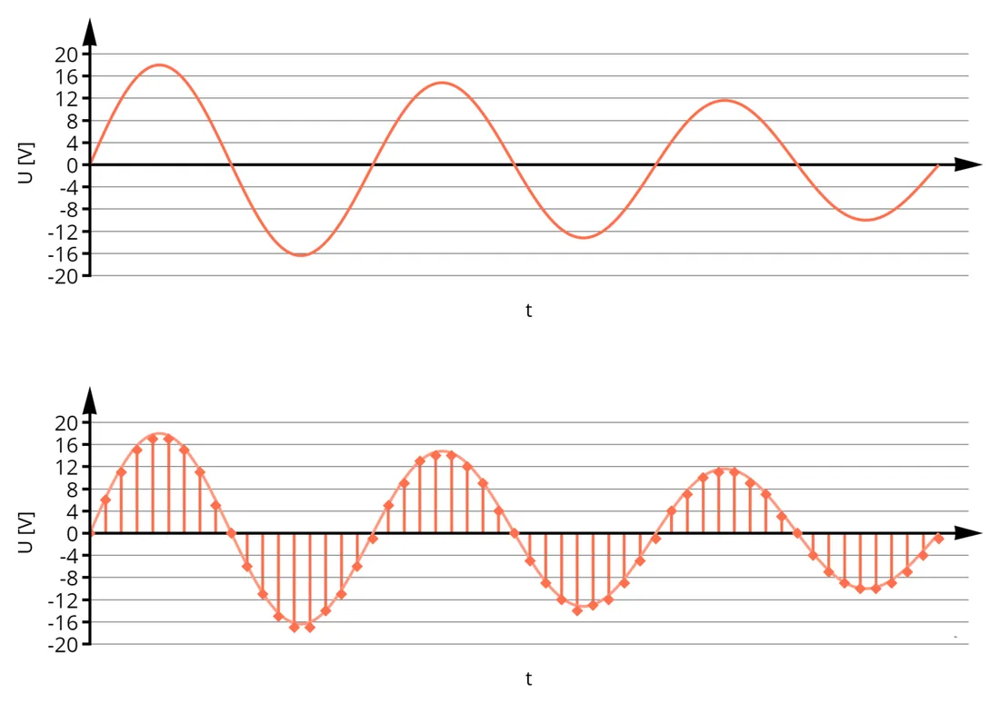
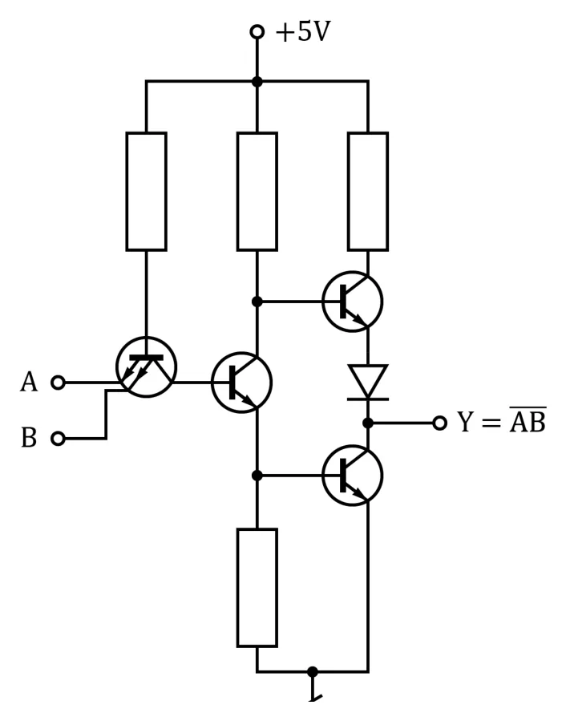
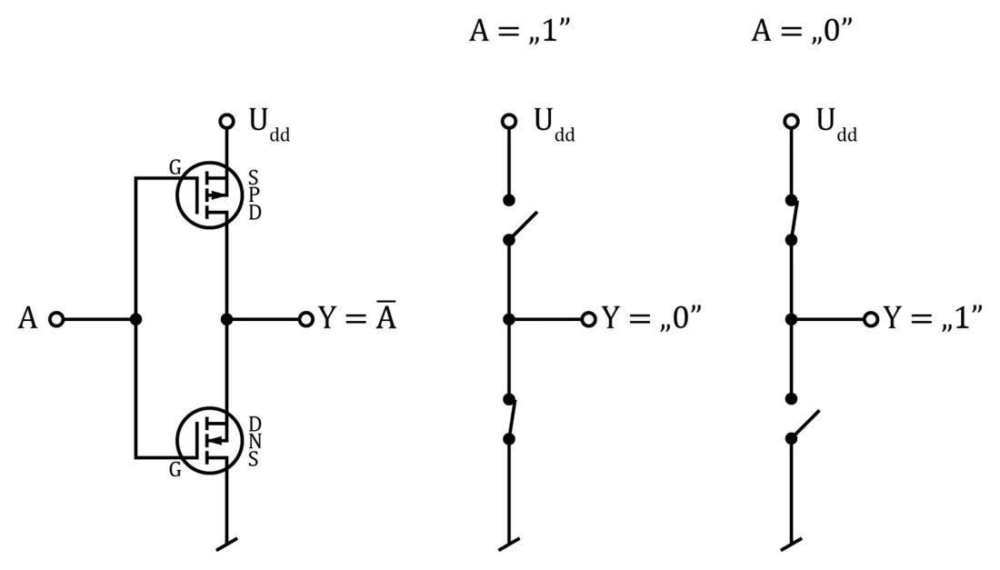
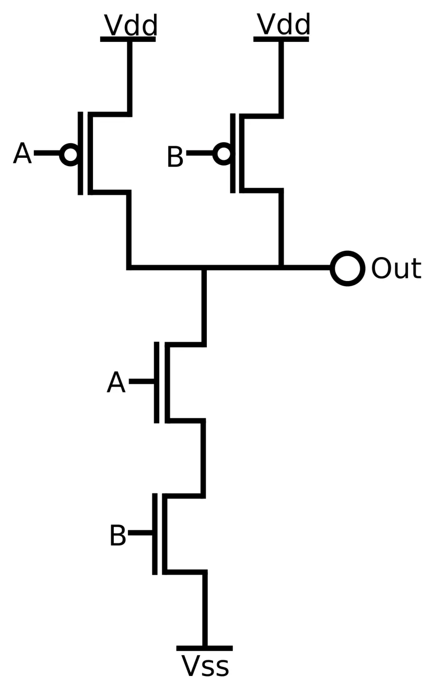
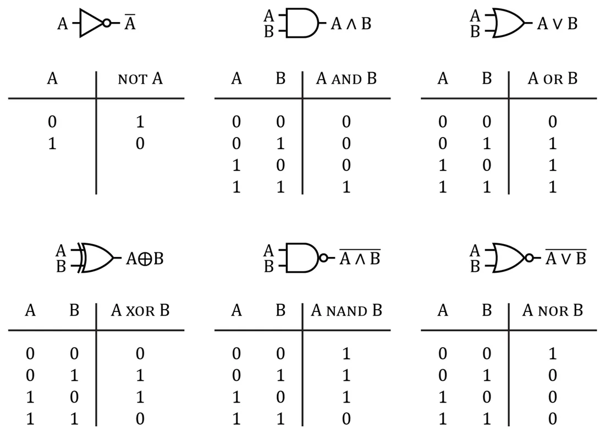
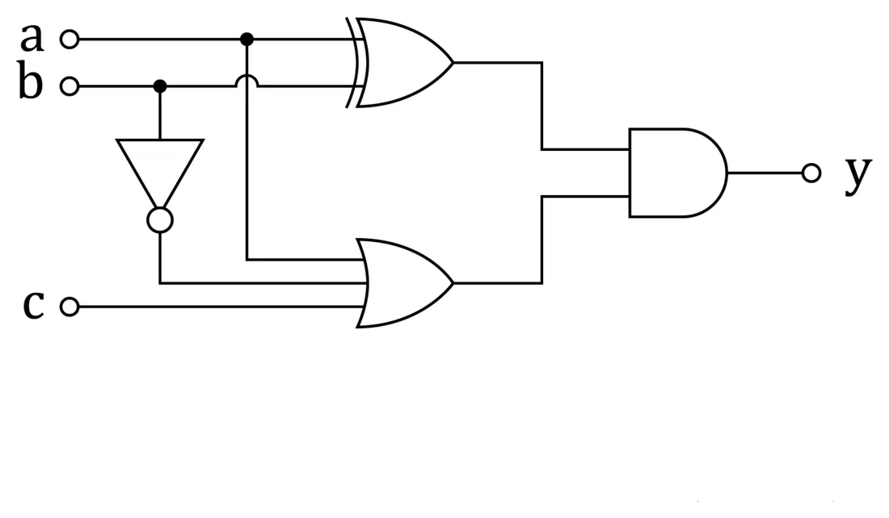
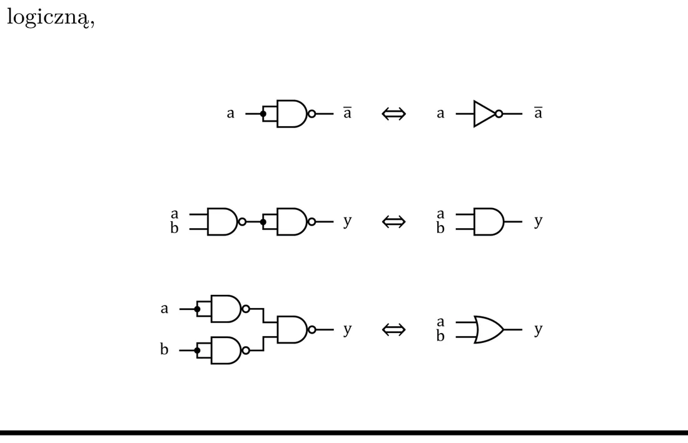
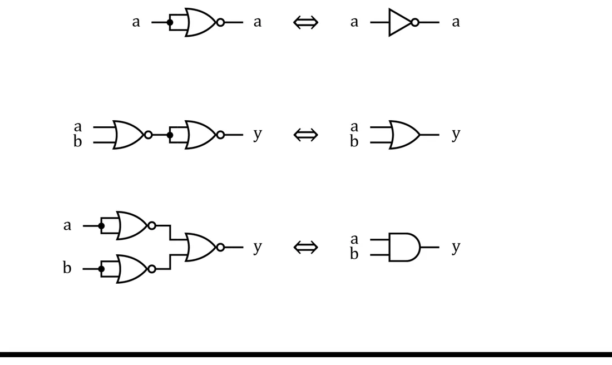

Аналоговый, дискретный и цифровой сигнал


- Аналоговый — непрерывный во времени; может принимать любое значение.
- Дискретный — его значение известно только через равные промежутки времени (отсчёты).
- Цифровой (логический) — важны только два состояния: 0 и 1. Каждому состоянию соответствует некоторый диапазон напряжений.
По-простому
Аналоговый — это диммер: любая яркость. Цифровой — обычный выключатель: горит или не горит. Поэтому мелкие помехи не страшны: «почти 5 В» — это всё равно единица.
Логические уровни: TTL и CMOS
TTL
Схемы TTL построены на биполярных транзисторах и питаются от 5 В.
| Напряжение (относительно массы) | Состояние |
|---|---|
| 0 В – 0,8 В | логический 0 (низкий уровень) |
| 0,8 В – 2 В | неопределённое — так нельзя |
| 2 В – 5 В | логическая 1 (высокий уровень) |


CMOS
Схемы CMOS (КМОП) состоят из пар МОП-транзисторов противоположного типа (канал n и канал p), соединённых так, что в установившемся состоянии проводит только один из них.
- Простые и дешёвые в производстве, позволяют очень плотную упаковку.
- Питание 3–18 В; новые низковольтные серии: 3,3 В, 2,5 В и даже 1,8 В.
- Почти не потребляют мощность в покое — только в момент переключения.
- Логические уровни близки к напряжениям питания: «0» — это 0–30% напряжения питания, «1» — 70–100%.




Третье состояние: высокий импеданс
Кроме 0 и 1 есть состояние высокого импеданса (Hi-Z): точка схемы ни с чем не соединена — «висит в воздухе». Чтобы у такой точки было определённое состояние, её через резистор соединяют с питанием (подтягивающий резистор, pull-up) или с массой. Бывают вентили, выход которых может находиться в состоянии Hi-Z (например, типа open collector — «открытый коллектор»).
По-простому
Hi-Z — это телефон с выдернутым штекером: он не говорит ни «да», ни «нет» — его просто нет на линии. Подтягивающий резистор — это договорённость: «если никто ничего не говорит, считаем, что ответ ДА». Мы вернёмся к этому на кнопках и шине I²C (лекция 12).
Логические вентили


| Вентиль | Запись | На выходе 1, когда… |
|---|---|---|
| NOT (отрицание, НЕ) | на входе 0 | |
| AND (произведение, И) | a · b | оба входа равны 1 |
| OR (сумма, ИЛИ) | a + b | хотя бы один вход равен 1 |
| XOR (исключающее ИЛИ) | a ⊕ b | входы разные |
| NAND (И-НЕ) | не оба входа равны 1 (противоположность AND) | |
| NOR (ИЛИ-НЕ) | ни один вход не равен 1 (противоположность OR) |
Кружок на выходе символа означает отрицание.
Булева алгебра
Работаем с двумя значениями {0, 1} и тремя операциями. В разных книгах у них разные символы:
| Операция | Логика | Множества | Цифровая техника (пользуемся этой) |
|---|---|---|---|
| конъюнкция (произведение, AND) | ∧ | ∩ | · |
| дизъюнкция (сумма, OR) | ∨ | ∪ | + |
| отрицание (NOT) | ¬ | ∼ | черта сверху: |
Внимание
В булевой алгебре «+» — это ИЛИ, а не сложение: 1 + 1 = 1.
Законы
| Закон | Для произведения | Для суммы |
|---|---|---|
| ассоциативность | (ab)c = a(bc) | (a+b)+c = a+(b+c) |
| коммутативность | ab = ba | a+b = b+a |
| дистрибутивность | a(b+c) = ab + ac | a + bc = (a+b)(a+c) |
| поглощение | a(a+b) = a | a + ab = a |
| дополнение | a · = 0 | a + = 1 |
Два закона, особенно важных в цифровой технике:
По-простому
Де Морган по-простому: «неправда, что (идёт дождь или дует ветер)» — то же самое, что «дождя нет и ветра нет». Черту над всем выражением можно «разломить» пополам, но тогда знак в середине меняется на противоположный.
Полезные мелочи, которых нет на слайде
a + 0 = a, a · 1 = a, a + 1 = 1, a · 0 = 0, a + a = a, a · a = a, = a (двойное отрицание исчезает).
Булева функция и таблица истинности
Булева функция n переменных ставит в соответствие каждой комбинации нулей и единиц на входах одно значение (0 или 1) на выходе: f: Bn → B. Это математическая модель комбинационной схемы — такой, у которой выход зависит только от того, что сейчас на входах.
Любую функцию можно записать таблицей истинности. Для n входов в таблице 2n строк. Пример — функция XOR:
| № строки | a | b | f(a,b) |
|---|---|---|---|
| 0 | 0 | 0 | 0 |
| 1 | 0 | 1 | 1 |
| 2 | 1 | 0 | 1 |
| 3 | 1 | 1 | 0 |
Номер строки — это десятичное число, которое образуют биты входов (01 = 1, 10 = 2…). Благодаря этому функцию можно задать коротко:
- множество единиц: f1 = {1, 2} — строки, где результат равен 1; запись f = Σ(1, 2),
- множество нулей: f0 = {0, 3} — строки, где результат равен 0; запись f = Π(0, 3).
Две канонические формы
Суммарная форма (ДНФ) — «сумма произведений»
Смотрим на строки с единицей. Каждая такая строка даёт одно произведение всех переменных: переменная, равная в этой строке 0, входит с отрицанием, равная 1 — без. Произведения соединяем суммой.
Для XOR: строка 01 → b, строка 10 → a:
Мультипликативная форма (КНФ) — «произведение сумм»
Смотрим на строки с нулём. Каждая даёт одну сумму, но здесь наоборот: переменная, равная 0, входит без отрицания, равная 1 — с отрицанием. Суммы соединяем произведением.
Для XOR: строка 00 → (a + b), строка 11 → ( + ):
Как не перепутать
Произведение должно дать 1 ровно в своей строке → все множители должны быть единицами → нули надо инвертировать. Сумма должна дать 0 ровно в своей строке → все слагаемые должны быть нулями → единицы надо инвертировать.
Логическая схема


- Схема показывает логическую структуру функции; информация идёт от входов (слева) к выходу.
- Точка на пересечении линий означает соединение; пересечение без точки — линии просто проходят мимо.
- Эта схема реализует функцию y = (a + b) · (a + + c).
NAND и NOR — универсальные вентили
Логика с четырьмя операторами (∧, ∨, ⇒, ¬) избыточна — часть операторов можно выразить через остальные. Достаточно двух: отрицание + конъюнкция или отрицание + дизъюнкция. А вентиль NAND (или NOR) содержит обе сразу, поэтому хватает одного вида вентиля, чтобы построить любую функцию.




| Хочу получить | Из вентилей NAND | Из вентилей NOR |
|---|---|---|
| NOT a | — оба входа соединены | — оба входа соединены |
| a AND b | NAND, за ним NOT: | сначала инвертируй входы: |
| a OR b | сначала инвертируй входы: | NOR, за ним NOT: |
Вторая и третья строки прямо следуют из законов де Моргана.
Задания на лабораторную (со слайда)
- Знакомство с программой Logisim, реализация простых функций на вентилях.
- Реализовать на доступных вентилях заданную функцию (на слайде: y = a · · c + a ⊕ b + c).
- Из вентилей NAND собрать NOT, AND и OR — каждый в отдельной схеме.
- Из этих «кирпичиков» реализовать функцию из пункта 2 так, чтобы схема отражала структуру формулы.
По шагам: Лабораторная 7.